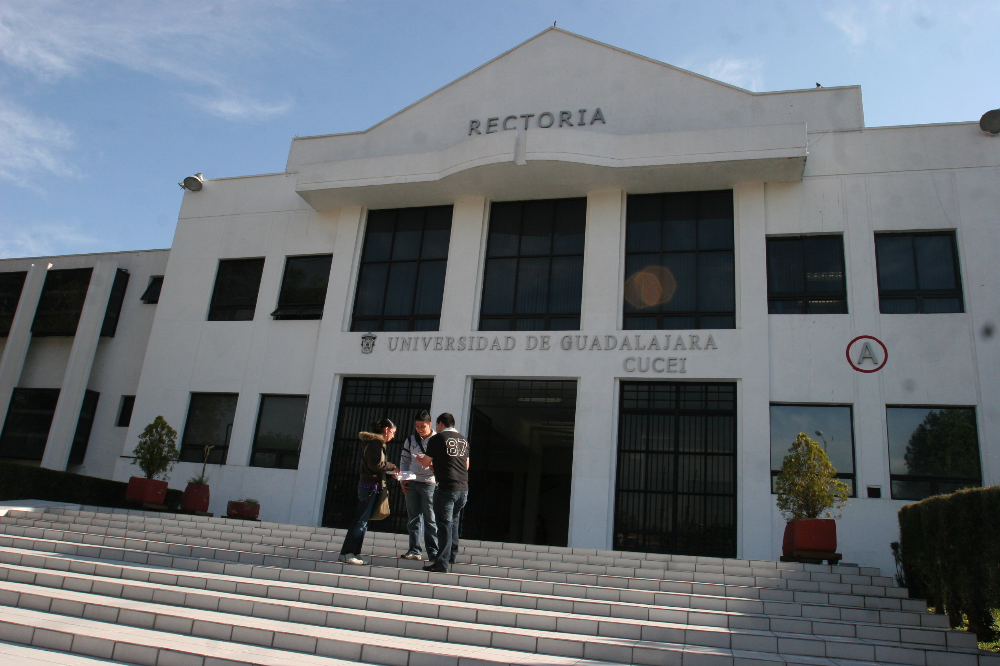
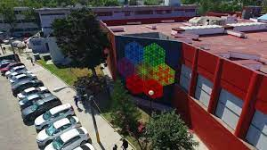
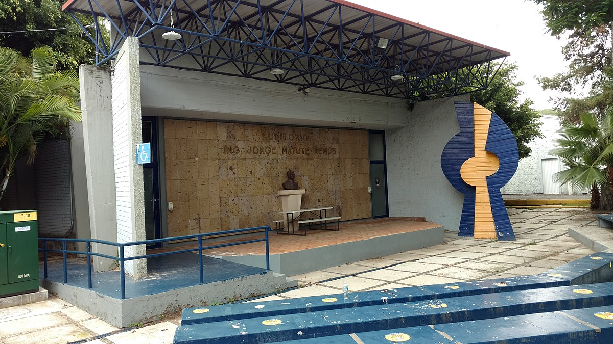
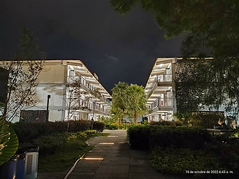
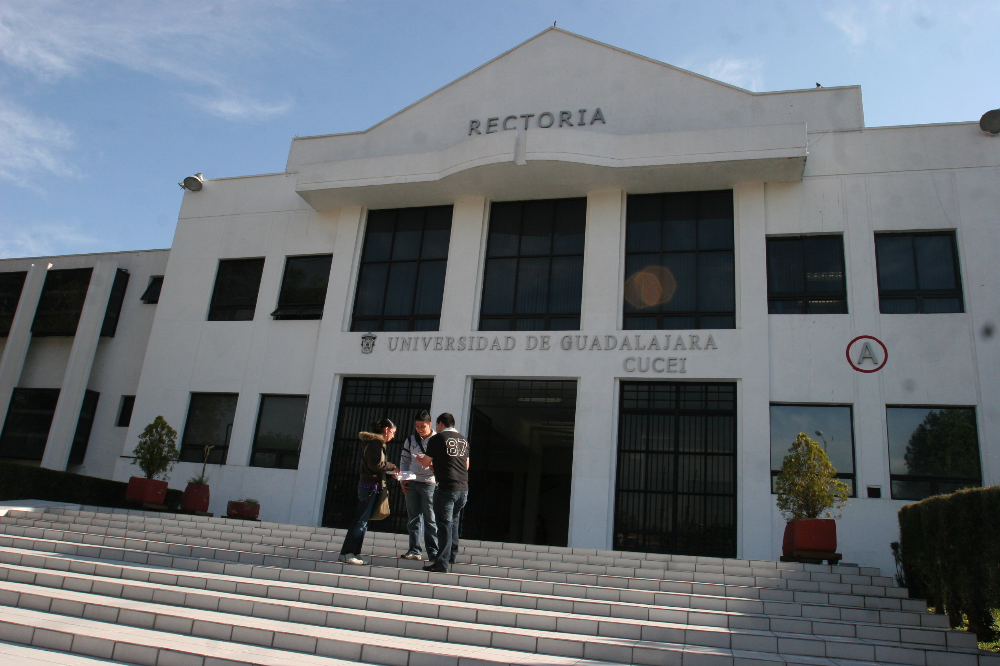
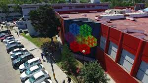
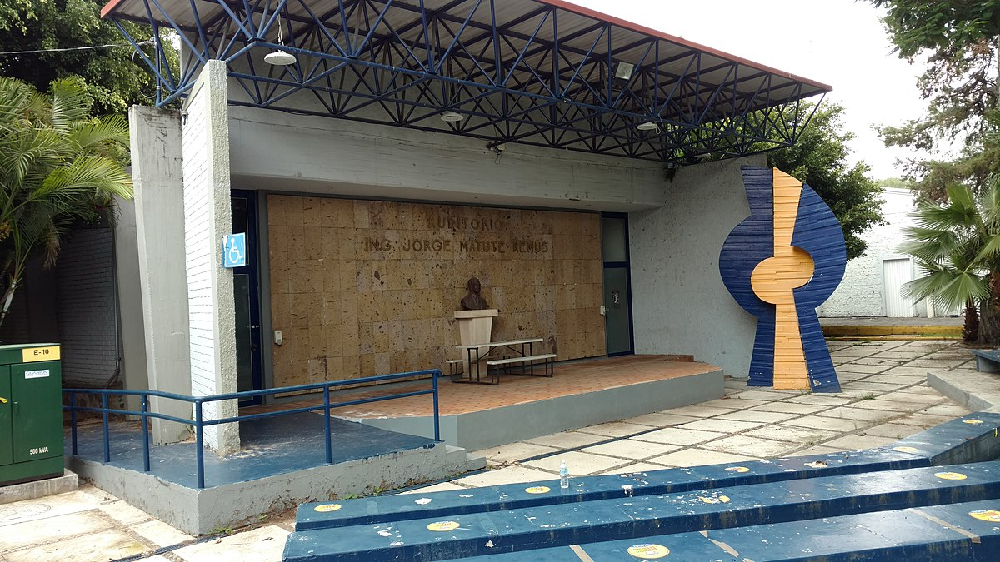
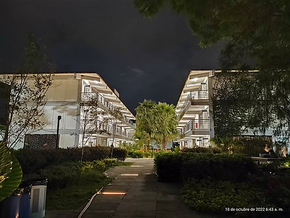

Nuestra mision

1Misión
El Centro Universitario de Ciencias Exactas e Ingenierías, como parte de la Red Universitaria de la Benemérita Universidad de Guadalajara, atiende las necesidades de la sociedad en la formación de educación superior e investigación científica y tecnológica en el campo de las ciencias exactas e ingenierías, impulsa la vinculación, la extensión y la difusión de la cultura, con carácter multidisciplinar, global y humanista, genera soluciones sostenibles, pertinentes e innovadoras mediante la excelencia académica, equidad, inclusión, integridad, solidaridad, transparencia y rendición de cuentas, con responsabilidad y compromiso social.
2Visión al 2030
En el año 2030, el Centro Universitario de Ciencias Exactas e Ingenierías es reconocido como líder en su campo por su calidad académica e investigación, con una cultura científica, tecnológica y social que le convierten en un agente de cambio articulado local y globalmente, transformador de los entornos con los que interactúa, genera las condiciones para que la innovación, vinculación, extensión y comunicación pública de la ciencia, la tecnología y la difusión de la cultura, incidan en el desarrollo económico, social y tecnológico sostenible de Jalisco y de México.
3Misión de la universidad de guadalajara
La Universidad de Guadalajara es la Red Universitaria de Jalisco. Es una institución benemérita, pública, laica y autónoma, con compromiso social y vocación internacional; que satisface las necesidades educativas de nivel medio superior y superior con calidad y pertinencia. Promueve la investigación científica y tecnológica, así como la vinculación y extensión para incidir en el desarrollo sustentable e incluyente de la sociedad. Es respetuosa de la diversidad cultural, honra los principios humanistas, la equidad, la justicia social, la convivencia democrática y la prosperidad colectiva.
Galeria
 








Divisiones

División de Ciencias Básicas
División de Ingenierías